Loading ...
|
3-4-2-1
|
Türkiye | 3 | - | 2 | United States |
4-3-3
|
| HT 2-1 | ||||||
|
FIFA World CupFriday 26 June 2026
|
||||||
- Venue
- Los Angeles Stadium
- Attendance
- 70,492
- Referee
- Mustapha Ghorbal
Goal10'
A. Güler
Assist: B. Yılmaz
Goal31'
B. Yılmaz
Assist: O. Kökçü
- 2
Substitution84'
Z. Çelik
Ç. Söyüncü
K. Yıldız
C. Uzun
Substitution88'
O. Kökçü
K. Ayhan
- 2
Substitution90+2'
O. Aydın
M. Müldür
B. Yılmaz
İ. Kahveci
Goal90+8'
K. Ayhan
Whistle45+7'
45+7'
Goal3'
A. Trusty
Assist: S. Berhalter
Yellow card19'
S. Berhalter
Goal49'
S. Berhalter
Substitution58'
T. Weah
C. Pulisic
Substitution76'
G. Reyna
S. Dest
- 2
Substitution77'
B. Aaronson
Á. Zendejas
J. Scally
A. Freeman
Substitution86'
W. McKennie
M. Tillman
Türkiye | |
|---|---|
Goalkeeper | |
| 23 | U. Çakır |
Defender | |
| 2 | Z. Çelik 84' |
| 14 | A. Bardakcı |
| 15 | O. Kabak |
Midfielder | |
| 5 | S. Özcan |
| 6 | O. Kökçü 88' |
| 8 | A. Güler 10' |
| 11 | K. Yıldız 84' |
| 13 | E. Elmalı |
| 24 | O. Aydın 90+2' |
Forward | |
| 21 | B. Yılmaz 31'90+2' |
Substitutes | |
| 4 | Ç. Söyüncü 84' |
| 17 | İ. Kahveci 90+2' |
| 18 | M. Müldür 90+2' |
| 22 | K. Ayhan 88'90+8' |
| 26 | C. Uzun 84' |
United States | |
Goalkeeper | |
| 1 | M. Turner |
Defender | |
| 6 | A. Trusty 3' |
| 12 | M. Robinson |
| 22 | M. McKenzie |
| 23 | J. Scally 77' |
Midfielder | |
| 7 | G. Reyna 76' |
| 8 | W. McKennie 86' |
| 14 | S. Berhalter 19'49' |
Forward | |
| 9 | R. Pepi |
| 11 | B. Aaronson 77' |
| 21 | T. Weah 58' |
Substitutes | |
| 2 | S. Dest 76' |
| 10 | C. Pulisic 58' |
| 16 | A. Freeman 77' |
| 17 | M. Tillman 86' |
| 26 | Á. Zendejas 77' |


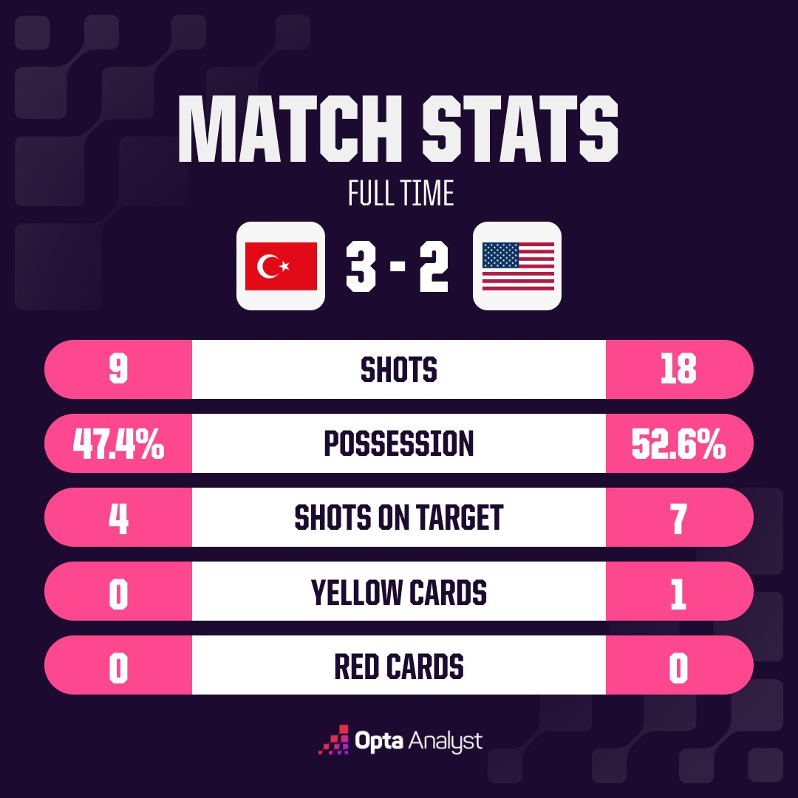
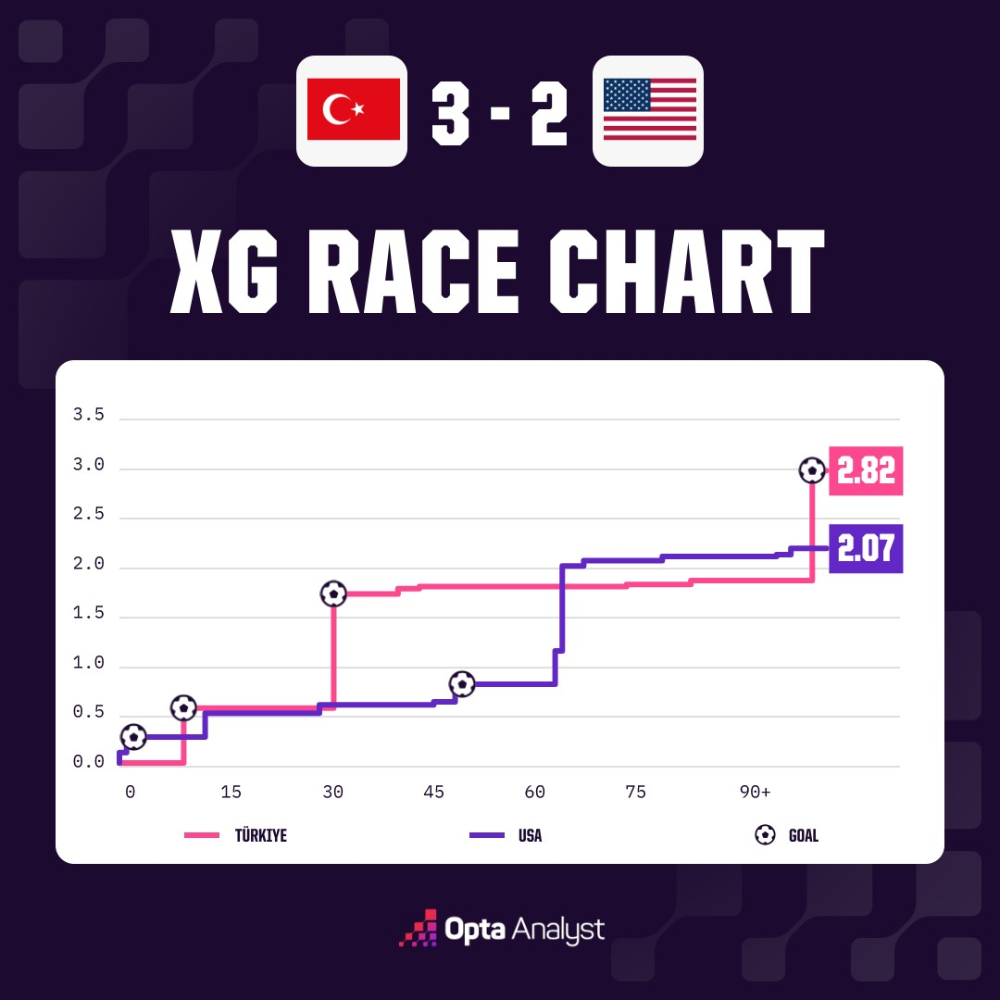
100'
Türkiye attempted 9 shots in this game, their lowest total in a single match in the 2026 FIFA World Cup.
90+10'
Türkiye WIN! It’s all over at Los Angeles Stadium, with Türkiye coming out on top 3-2 over United States, thanks to goals from Arda Güler, Kaan Ayhan and Baris Yılmaz.
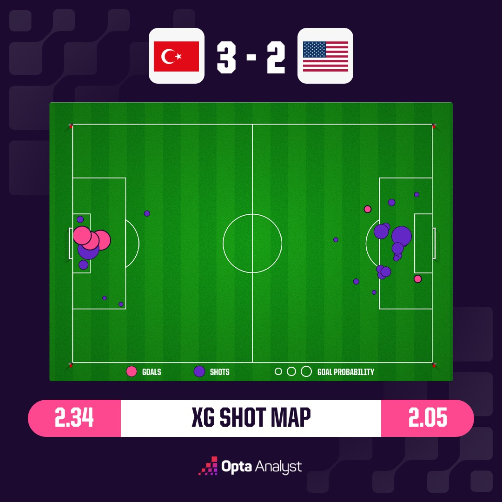
90+8'
Türkiye have scored 3 goals in the FIFA World Cup game for the first time since 29th June 2002 against Korea Republic (W3-2).
90+8'
Kaan Ayhan has scored his first goal in the 2026 FIFA World Cup.
90+8'
GOAL! The breakthrough finally arrives and will that prove to be the winner for Türkiye? They have taken a late lead courtesy of Kaan Ayhan's finish.
90+8'
A chance goes begging as Can Uzun gets off a shot that does not hit the target. They might have done better with that one, but instead it is a goal-kick to United States.
90+5'
Shot blocked! Ricardo Pepi unleashes an attempt at goal, but the ball does not reach its target thanks to Çaglar Söyüncü, who makes a solid block to stem the danger – for now.
90+3'
BLOCK! An intervention from Eren Elmalı might have just prevented a goal, with the defending player getting in the way of an attempt from Álex Zendejas. Solid defending there!
90+2'
Türkiye are making a tactical change. Baris Yılmaz is leaving the field and in their place comes Irfan Can Kahveci – we will soon see if this switch has the desired impact.
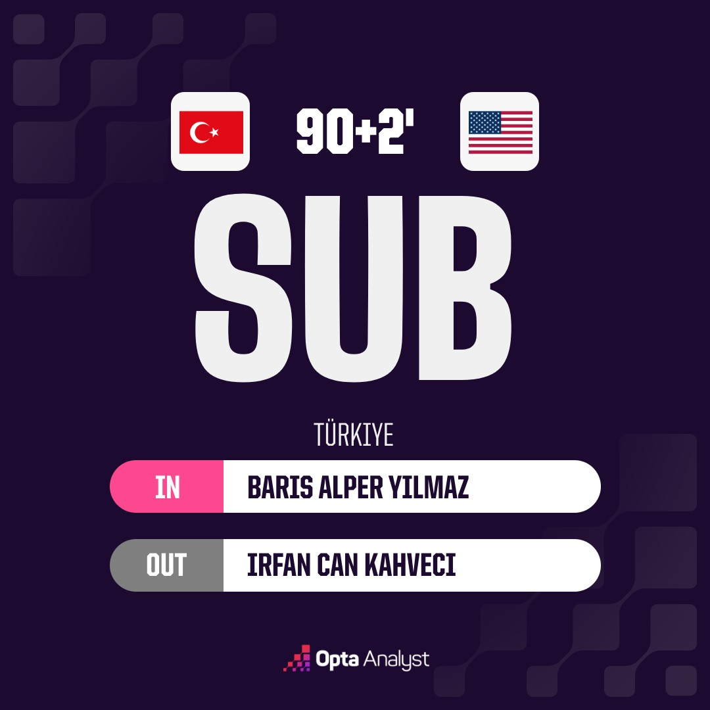
90+2'
Not much goalmouth action to speak of in this period of the game, with no attempts made from either side. This game could spark at any moment, however. It is Türkiye who have had more of the ball, controlling 58 per cent possession in the last 10 minutes.
90+2'
Türkiye are making a tactical change. Oguz Aydın is leaving the field and in their place comes Mert Müldür – we will soon see if this switch has the desired impact.
89'
A free-kick to United States, as Ozan Kabak goes in and fouls Christian Pulisic. However, Türkiye will not mind giving one away in this area too much, with plenty of distance to their goal.
88'
The Türkiye manager is looking to the substitutes’ bench, bringing on Kaan Ayhan in place of Orkun Kökçü. Will the change make a difference? Let’s find out!
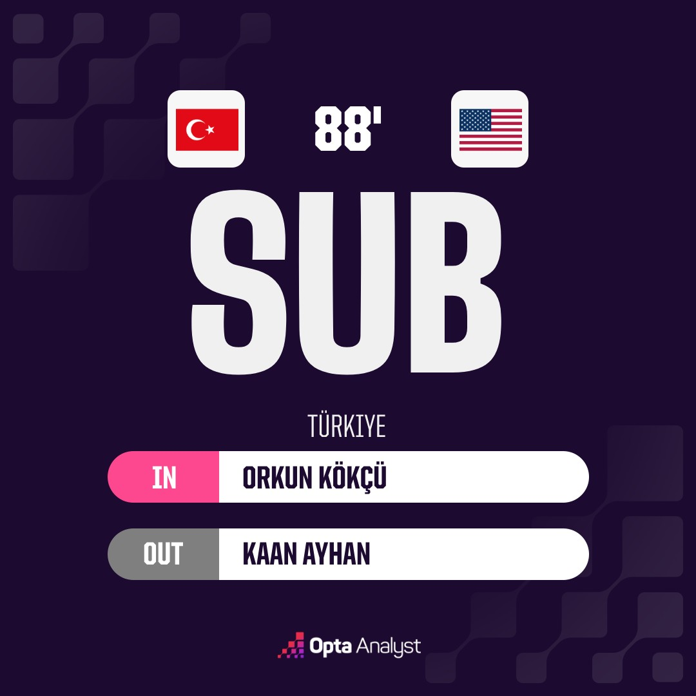
88'
Offside! As United States search for the goal they need, Christian Pulisic looks set to get in behind the defensive line, but the assistant's flag is up.
86'
Weston McKennie’s match is over as United States decide to make a substitution. Malik Tillman enters the field in what looks like a tactical change.
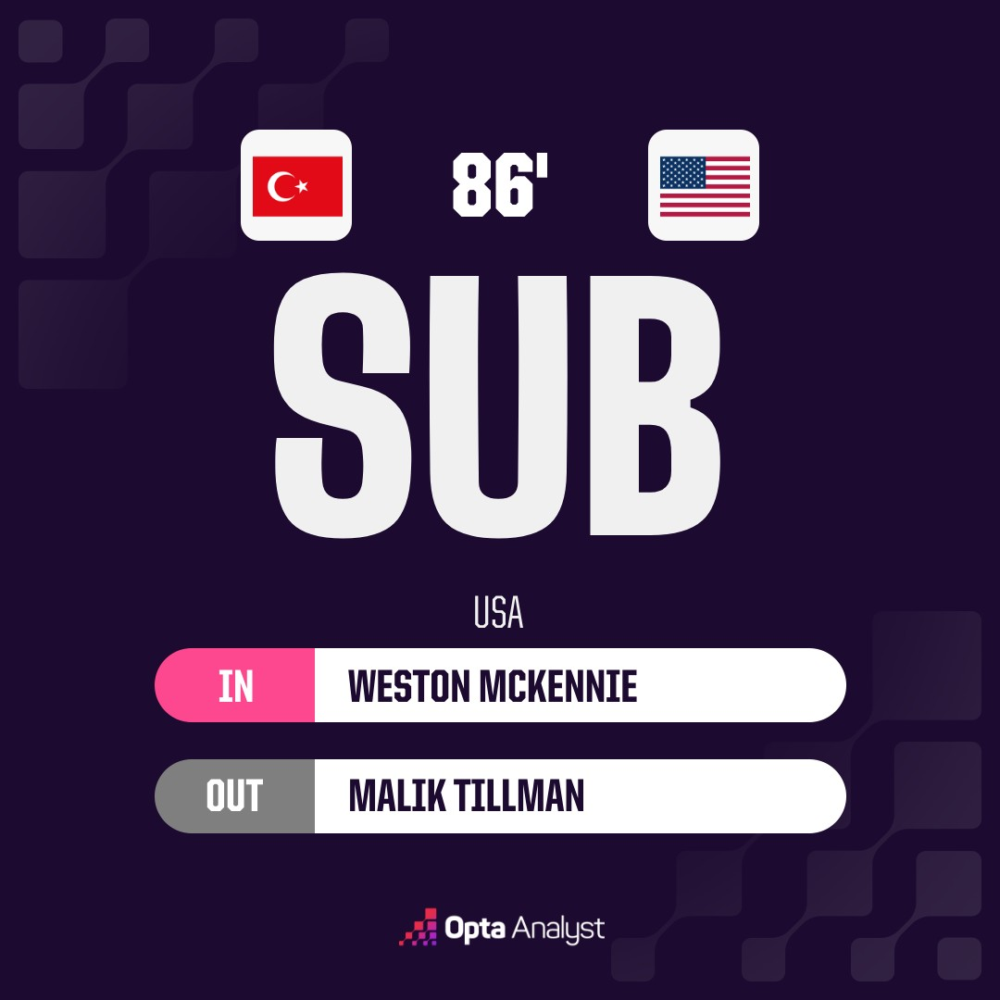
84'
A foul from Álex Zendejas on Oguz Aydın sees Türkiye win a free-kick, but it is not in a dangerous position, so United States should be confident they can defend it easily enough.
84'
Kenan Yıldız’s match is over as Türkiye decide to make a substitution. Can Uzun enters the field in what looks like a tactical change.
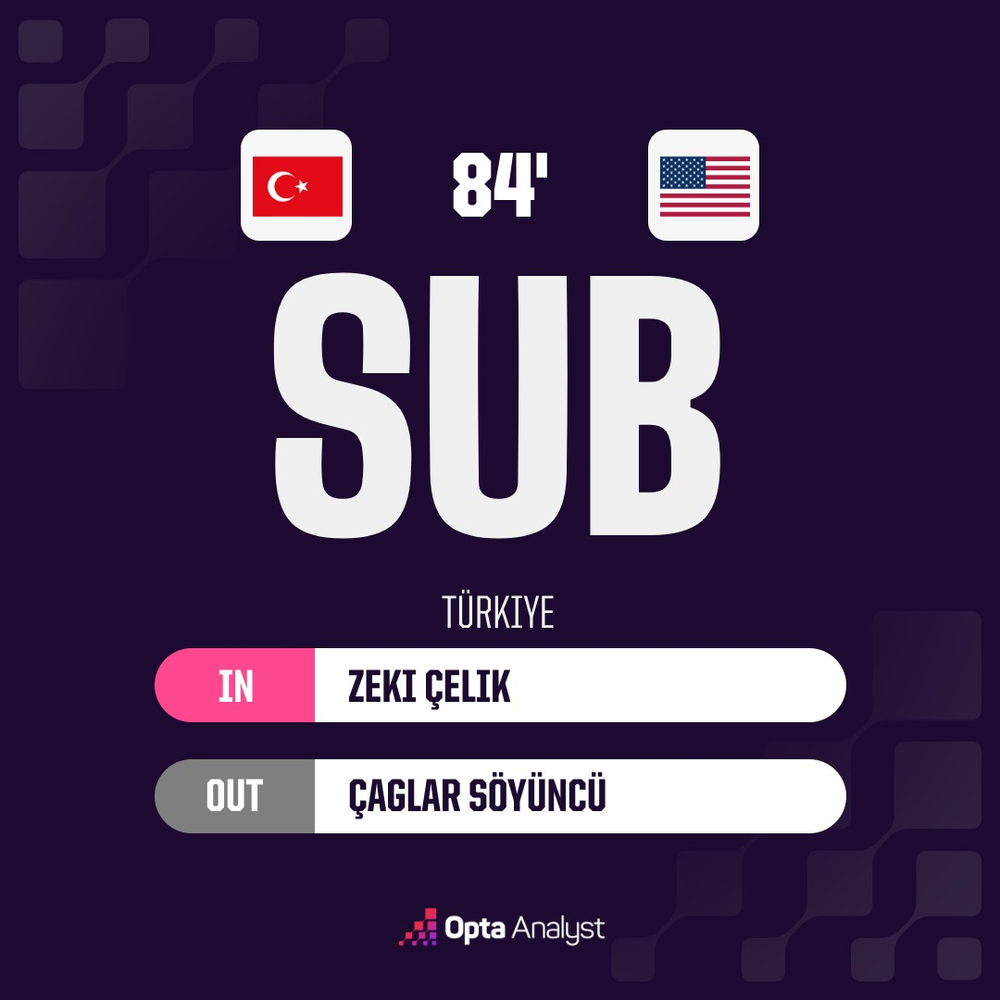
84'
Türkiye are making a tactical change. Zeki Çelik is leaving the field and in their place comes Çaglar Söyüncü – we will soon see if this switch has the desired impact.
83'
A free-kick to United States, as Salih Özcan goes in and fouls Christian Pulisic. However, Türkiye will not mind giving one away in this area too much, with plenty of distance to their goal.
81'
A chance goes begging as Orkun Kökçü gets off a shot that does not hit the target. They might have done better with that one, but instead it is a goal-kick to United States.
81'
In the last 15 minutes, it is Türkiye who have dominated the ball, having seen 65.91% of the possession, yet they have not been able to go and turn that into a goal just yet, with their opponents standing firm.
77'
MISS! A shot from Christian Pulisic ends up being off target. They might have done a bit better with that one, but it remains United States 2-2 Türkiye.
77'
Substitution! Alex Freeman replaces Joe Scally for United States as the manager shuffles the pack. Can Alex Freeman make an impression as this match continues?
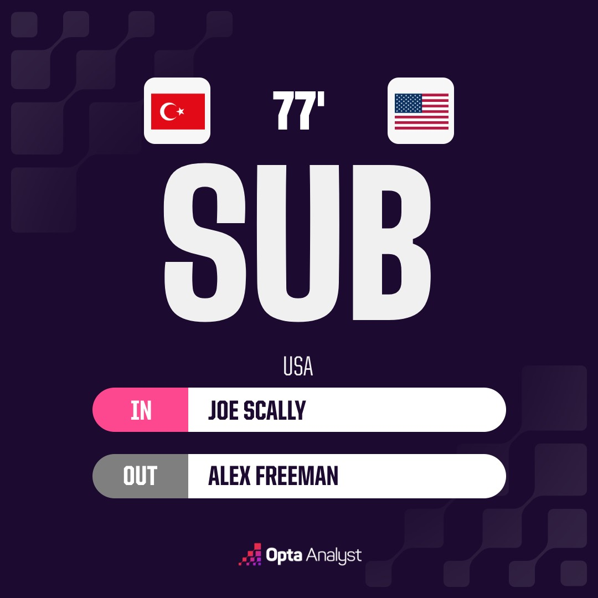
77'
The United States manager is looking to the substitutes’ bench, bringing on Álex Zendejas in place of Brenden Aaronson. Will the change make a difference? Let’s find out!
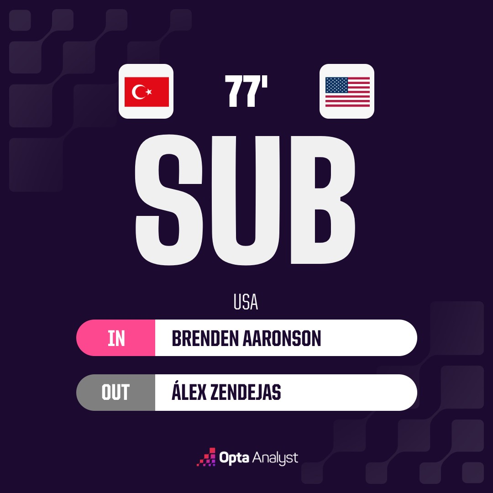
76'
United States are making a tactical change. Giovanni Reyna is leaving the field and in their place comes Sergiño Dest – we will soon see if this switch has the desired impact.
76'
It is a corner now to United States, with Türkiye somewhat hanging on here as they look to hold out for a positive result. Can United States make something of this set-piece opportunity?
76'
United States have had more of the ball with 75 minutes played, with 57.86% possession compared to Türkiye’s 42.14%. That is not likely to change too much in the final 15 minutes.
72'
MISS! A shot from Kenan Yıldız ends up being off target. They might have done a bit better with that one, but it remains Türkiye 2-2 United States.
71'
A rash challenge from Ozan Kabak, who sends Ricardo Pepi tumbling, giving United States a free-kick. It is not in a threatening position, but it gives them a chance to get back on the ball.
71'
Sebastian Berhalter goes in on Orkun Kökçü and concedes a foul. The free-kick is not in a particularly dangerous area from United States’s viewpoint, though.
67'
Free-kick! A foul from Arda Güler on Christian Pulisic. It is well away from Türkiye’s goal, so it is unlikely to result in a chance for United States.
66'
That is a disappointing effort from Weston McKennie, who went for glory but got their attempt wrong, and the shot sailed off target. A frustrating moment for United States.
66'
With 25 minutes left to play, it’s a good chance to check in on the shot count. United States have mustered 14 so far, with 7 of those landing on target. On the other hand, Türkiye have gotten 5 of their 2 of attempts on target.
66'
Plenty of the ball in the last quarter-of-an-hour of this match for United States, but still Türkiye stand firm, despite having had only 33.93% of the ball in that period. Can United States make their possessional dominance count?
63'
Türkiye have a corner to defend now after Zeki Çelik diverts an attempt from Weston McKennie out of play. Can United States take this chance to get a good delivery in and really test their opponent’s defence?
63'
Ugurcan Çakır has made 5 saves, his highest total in a single match in the FIFA World Cup.
63'
WHAT A MISS! Oh dear, oh dear, that is an awful attempt from Christian Pulisic, as a huge chance for United States to score the goal they need goes begging. What a let off for Türkiye, though. They will have to defend better than that from here on out!
63'
United States have attempted the last 6 shots in this game, Türkiye last shot was taken by Kenan Yıldız in the 43rd minute.
63'
MISS! The score remains 2-2, with Türkiye relieved after United States’s Ricardo Pepi goes for goal but sends their attempt off target. Not one to write home about, that one.
62'
MISS! How has that not gone in? A complete lack of composure shown from Brenden Aaronson, who squanders a golden chance for United States, whose coach looks on frustrated from the touchline. A real let off for Türkiye!
62'
CLOSE! Christian Pulisic gets into a decent shooting position inside the Türkiye area, and manages to find space to get an effort off. However, Ugurcan Çakır is equal to it.
59'
Not much goalmouth action to speak of in this period of the game, with no attempts made from either side. This game could spark at any moment, however. It is United States who have had more of the ball, controlling 56 per cent possession in the last 10 minutes.
58'
A substitution for United States sees Timothy Weah replaced by Christian Pulisic. There does not appear to be any obvious sign of an injury, so that is a tactical switch.
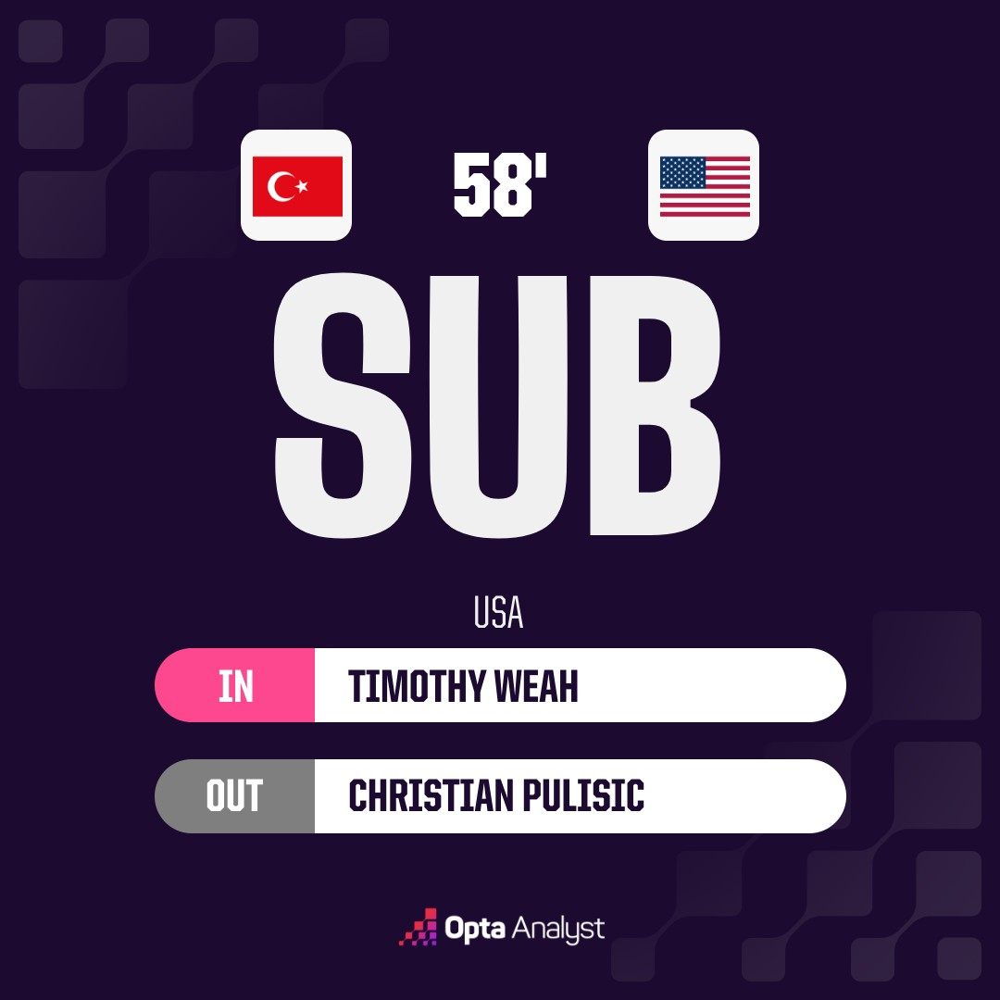
57'
A rash challenge from Mark McKenzie, who sends Baris Yılmaz tumbling, giving Türkiye a free-kick. It is not in a threatening position, but it gives them a chance to get back on the ball.
57'
The Türkiye defence steps up in time and there is a frustration for Joe Scally, who thought they were through until the flag goes up to signal offside.
57'
United States have started the second half exactly as they finished the first - patient build-up play with 20+ passes in that move. They're clearly in no rush to force things.
56'
The United States defence steps up in time and there is a frustration for Arda Güler, who thought they were through until the flag goes up to signal offside.
54'
A foul from Arda Güler on Sebastian Berhalter sees United States win a free-kick, but it is not in a dangerous position, so Türkiye should be confident they can defend it easily enough.
53'
A free-kick to Türkiye, as Miles Robinson goes in and fouls Kenan Yıldız. However, United States will not mind giving one away in this area too much, with plenty of distance to their goal.
53'
The Türkiye defence steps up in time and there is a frustration for Timothy Weah, who thought they were through until the flag goes up to signal offside.
53'
Orkun Kökçü goes in on Brenden Aaronson and concedes a foul. The free-kick is not in a particularly dangerous area from Türkiye’s viewpoint, though.
49'
Sebastian Berhalter has scored his first goal in the 2026 FIFA World Cup.
49'
All square! We have an equaliser! A long-range strike from Sebastian Berhalter restores parity. It’s all level at 2-2 between United States and Türkiye.
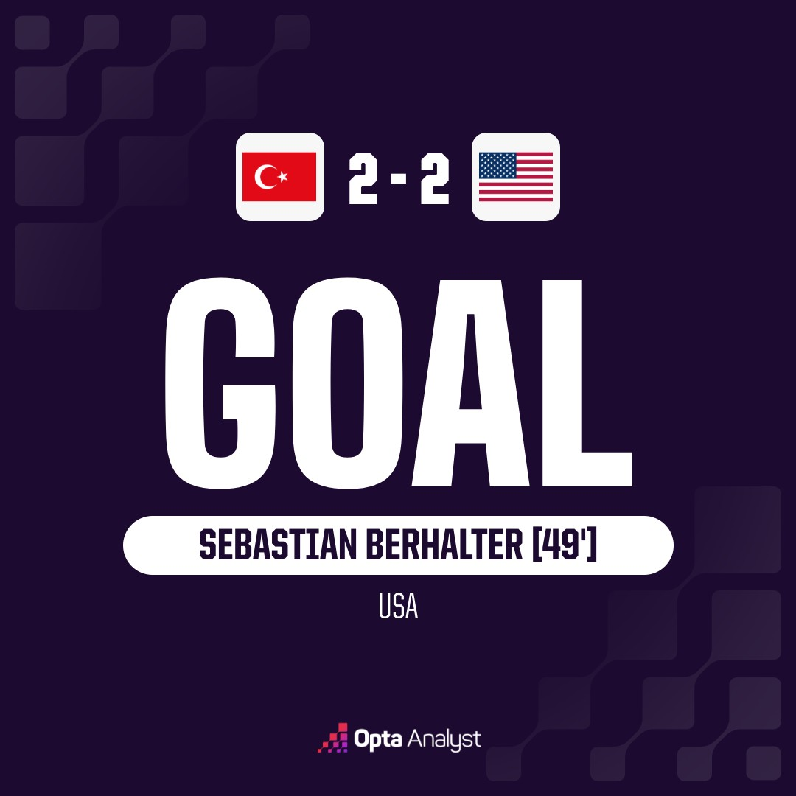
48'
A chance now for United States to get a good delivery into the box, after the ball is diverted behind for a corner. United States have been pushing for what would be a key goal, but Türkiye have stood firm so far.
53'
Türkiye are unbeaten in their last 3 FIFA World Cup matches when leading at half-time (W3, D0) dating back to 3rd June 2002 against Brazil (L1-2).
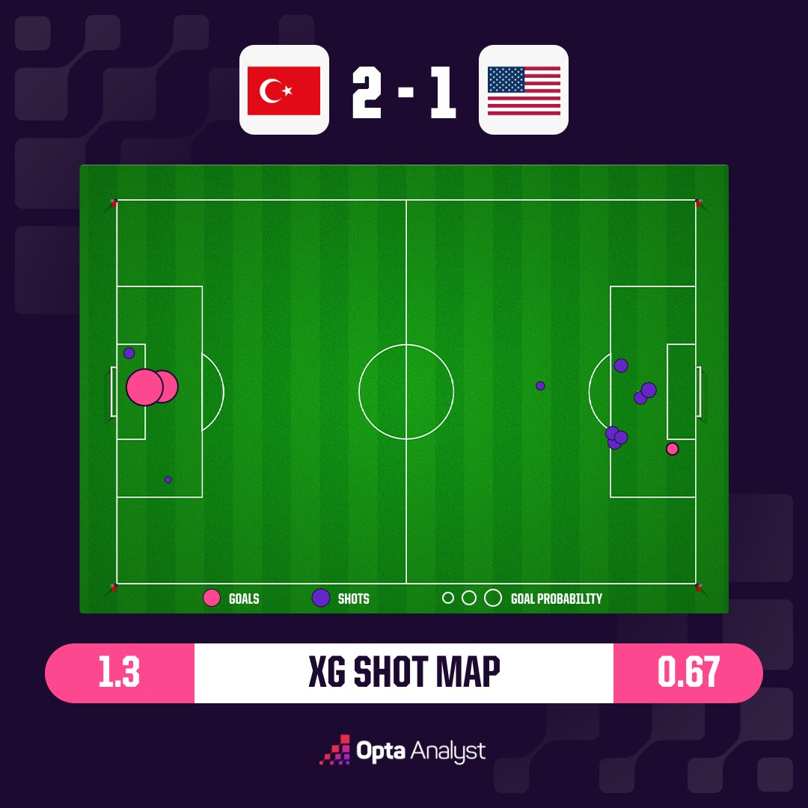
45+7'
The first half comes to a close and it’s Türkiye who have the lead over United States at Los Angeles Stadium, with the scoreline 2-1 at the interval. Will United States turn this around after the break?
45+4'
No luck – it’s offside! Timothy Weah looked to dart in behind and get on the end of a pass, yet they just went too early, and the flag is up to signal offside.
45+4'
Excellent defensive work from Türkiye; their organization and success in key duels are effectively safeguarding their lead.
45+3'
What a miss! That was a huge chance for Auston Trusty, but they have failed to convert. What an opportunity that was for United States.
45+1'
A foul from Weston McKennie on Abdülkerim Bardakcı sees Türkiye win a free-kick, but it is not in a dangerous position, so United States should be confident they can defend it easily enough.
45+1'
Good play from Sebastian Berhalter, who draws a foul from Arda Güler to hand United States a free-kick in a dangerous position. Will they create something from this set-piece?
45+1'
Ugurcan Çakır is called into action to keep out a shot from outside the box by Weston McKennie. The effort from the United States player was on target, but Türkiye shot-stopper got to it.
44'
A foul from Baris Yılmaz on Sebastian Berhalter sees United States win a free-kick, but it is not in a dangerous position, so Türkiye should be confident they can defend it easily enough.
43'
Türkiye win a corner after Kenan Yıldız sees a shot diverted wide by Miles Robinson. Can Türkiye make this opportunity count, or will United States defend this?
42'
It is a corner now to United States, with Türkiye somewhat hanging on here as they look to hold out for a positive result. Can United States make something of this set-piece opportunity?
40'
A wave of set-pieces for United States as Türkiye find themselves penned in. They’ll need to stay switched on to protect this lead.
40'
Corner now for Türkiye, as they see a shot from Abdülkerim Bardakcı deflected out of play for a set-piece. United States have some defending to do, here. Could this result in a big opportunity?
39'
Foul! A free-kick now in a dangerous area for Türkiye, after Eren Elmalı is fouled by Brenden Aaronson. Can Türkiye make the most of this opportunity?
39'
Free-kick! A foul from Auston Trusty on Arda Güler. It is well away from United States’s goal, so it is unlikely to result in a chance for Türkiye.
38'
Salih Özcan goes in on Sebastian Berhalter and concedes a foul. The free-kick is not in a particularly dangerous area from Türkiye’s viewpoint, though.
37'
Despite trailing, United States are showing real defensive grit, digging in and stopping further damage as they try to build a platform.
33'
Free-kick! A foul from Kenan Yıldız on Joe Scally. It is well away from Türkiye’s goal, so it is unlikely to result in a chance for United States.
31'
Baris Yılmaz has scored his first goal in the 2026 FIFA World Cup.
31'
Orkun Kökçü has assisted his first goal in the 2026 FIFA World Cup.
31'
GOAL! Türkiye are in the lead! Baris Yılmaz scores from inside the box to give his side the advantage in this match. Can United States find a way back into this, or will Türkiye go on and win it now?
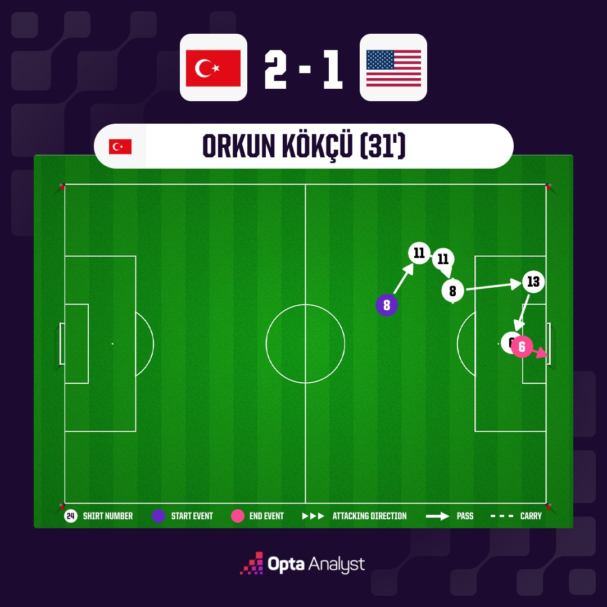
31'
HUGE CHANCE GOES BEGGING! What a miss that is from Orkun Kökçü, who looked all set to score a goal that their team need, but instead fails to direct their attempt into the back of the net. That was a big, big opportunity for Türkiye.
29'
The Türkiye defence steps up in time and there is a frustration for Ricardo Pepi, who thought they were through until the flag goes up to signal offside.
29'
MISS! A shot from Miles Robinson ends up being off target. They might have done a bit better with that one, but it remains United States 1-1 Türkiye.
28'
There is plenty of possession for United States, with 65.08% compared to Türkiye’s 34.92% in the last 15 minutes. However, United States have not been able to turn that dominance of the ball into a goal or even a shot during the period – which will be a huge frustration for their coach.
28'
There is plenty of possession for United States, with 65.22% compared to Türkiye 34.78 % in the last 15 minutes. However, United States have not been able to turn that dominance of the ball into a goal.
27'
A free-kick to United States, as Baris Yılmaz goes in and fouls Mark McKenzie. However, Türkiye will not mind giving one away in this area too much, with plenty of distance to their goal.
26'
Neither team has had a shot in the past 10 minutes, as this match just enters something of a down period. United States have seen more of the ball, with 76 per cent possession, but Türkiye are keeping them away from goal. There is still a chance the match will spark into life, though.
21'
Good play from Arda Güler, who draws a foul from Sebastian Berhalter to hand Türkiye a free-kick in a dangerous position. Will they create something from this set-piece?
19'
A yellow card for United States's Sebastian Berhalter. They will have to walk a tightrope for the rest of this match, and Türkiye will likely look to target them and draw a second bookable offence.
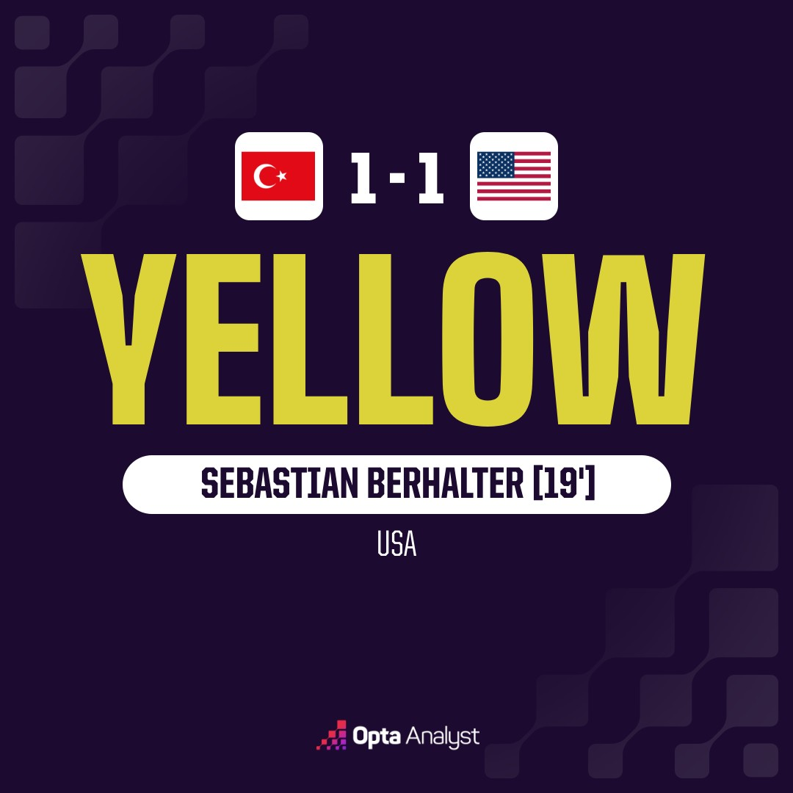
18'
A free-kick to Türkiye, as Sebastian Berhalter goes in and fouls Salih Özcan. However, United States will not mind giving one away in this area too much, with plenty of distance to their goal.
16'
Ozan Kabak goes in on Ricardo Pepi and concedes a foul. The free-kick is not in a particularly dangerous area from Türkiye’s viewpoint, though.
15'
It’s been tight so far, and United States are making sure it stays that way with strong defensive discipline and well-timed clearances.
14'
Auston Trusty goes in on Oguz Aydın and concedes a foul. The free-kick is not in a particularly dangerous area from United States’s viewpoint, though.
13'
Chance! A shot from inside the area from Brenden Aaronson was heading in, but Ugurcan Çakır makes a fine stop to keep it out. A big save from the Türkiye shot-stopper!
13'
That might have been going in! A fantastic block from Salih Özcan, who gets in the way of a goal-bound effort from Brenden Aaronson. Would the goalkeeper have been beaten? We will never know.
10'
Baris Yılmaz has assisted his first goal in the 2026 FIFA World Cup.
10'
Arda Güler has scored his first goal in the 2026 FIFA World Cup.
10'
We are level! It’s all square after Arda Güler finishes from inside the area. It’s Türkiye 1-1 United States – will either team go onto win it now? It’s all to play for in the final stages.
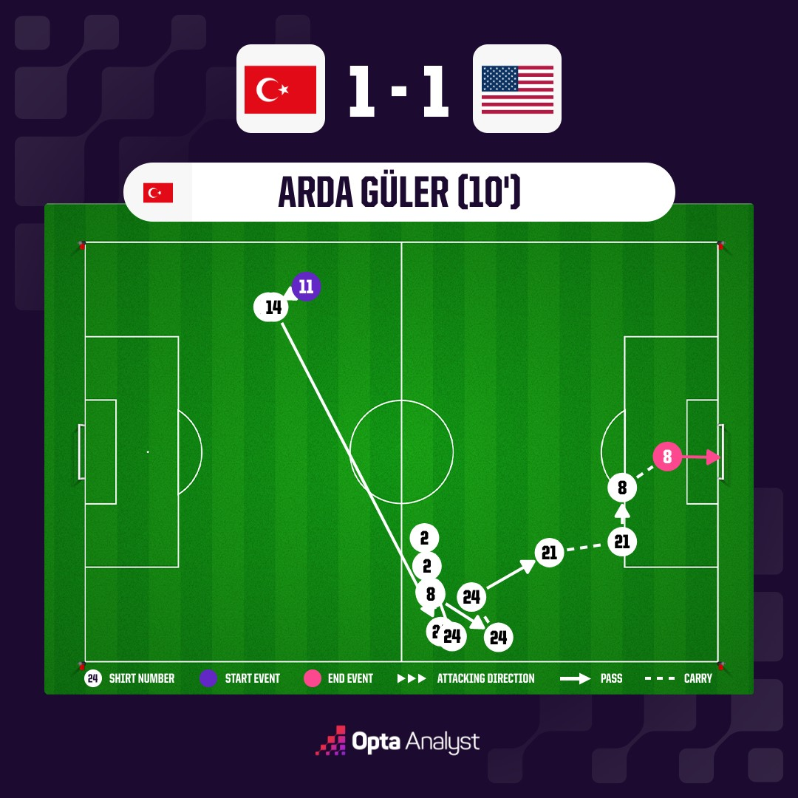
10'
Miles Robinson goes in on Kenan Yıldız and concedes a foul. The free-kick is not in a particularly dangerous area from United States’s viewpoint, though.
8'
Free-kick! A foul from Orkun Kökçü on Giovanni Reyna. It is well away from Türkiye’s goal, so it is unlikely to result in a chance for United States.
7'
The United States defence steps up in time and there is a frustration for Baris Yılmaz, who thought they were through until the flag goes up to signal offside.
6'
Strong early signals from United States at the back — calm and commanding as they break up attacks with ease.
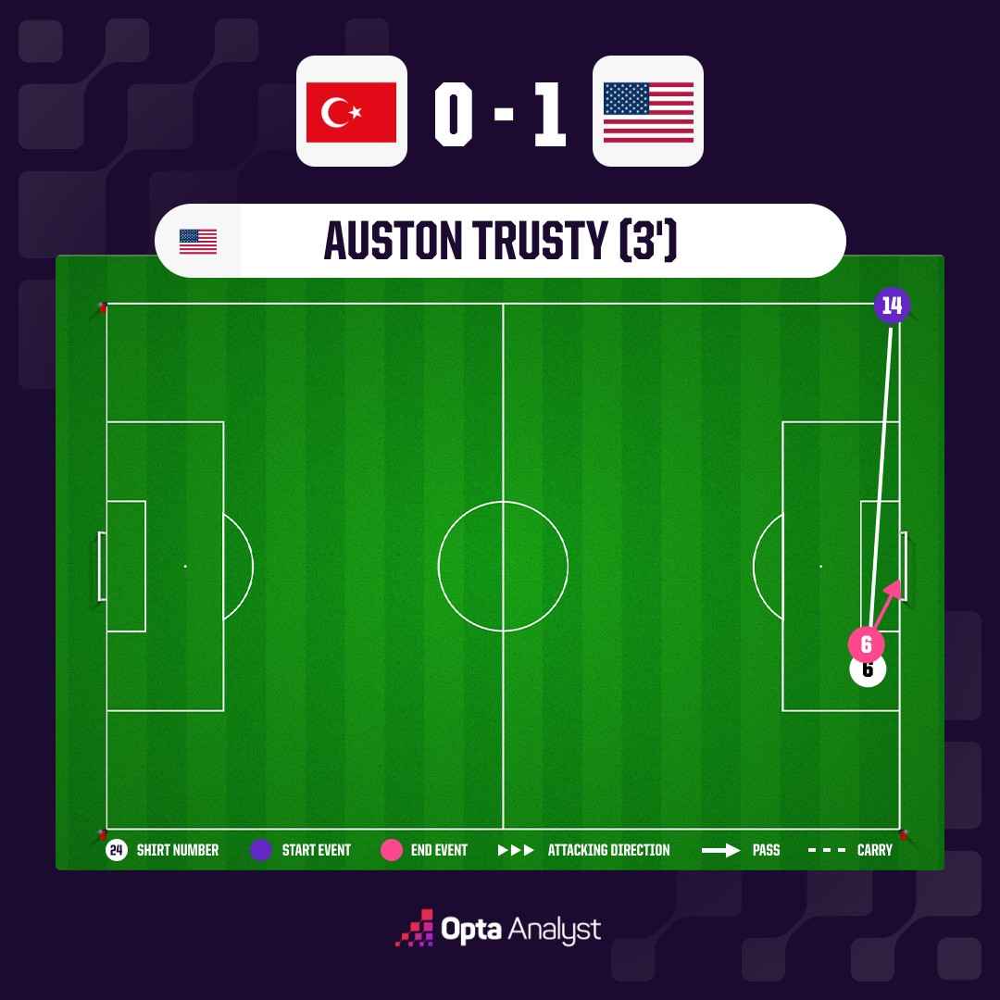
3'
Sebastian Berhalter has assisted his first goal in the 2026 FIFA World Cup.
3'
Auston Trusty has scored his first goal in the 2026 FIFA World Cup.
3'
GOAL! A great start for United States as they strike first and move into a 1-0 lead. Auston Trusty beats the goalkeeper from inside the penalty area – it looks like we are in for an exciting contest at Los Angeles Stadium!
2'
Corner! United States are pushing for a goal and now they have an opportunity from this set-piece.
2'
Save! A big stop from Ugurcan Çakır, who reacts to keep out Auston Trusty's attempt from inside the area.
1'
That might have been going in! A fantastic block from Ozan Kabak, who gets in the way of a goal-bound effort from Giovanni Reyna. Would the goalkeeper have been beaten? We will never know.
1'
We are under way as United States kick off at Los Angeles Stadium. Let's hope an entertaining contest is in store.
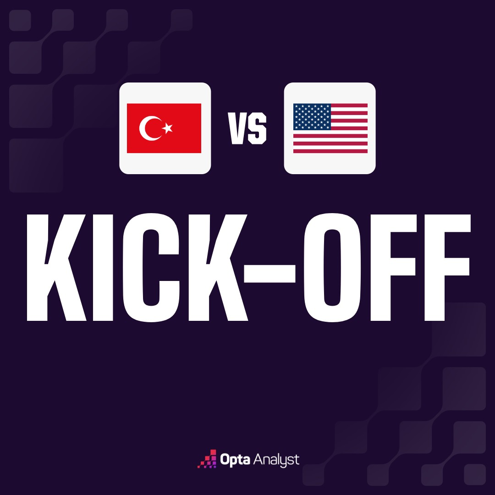
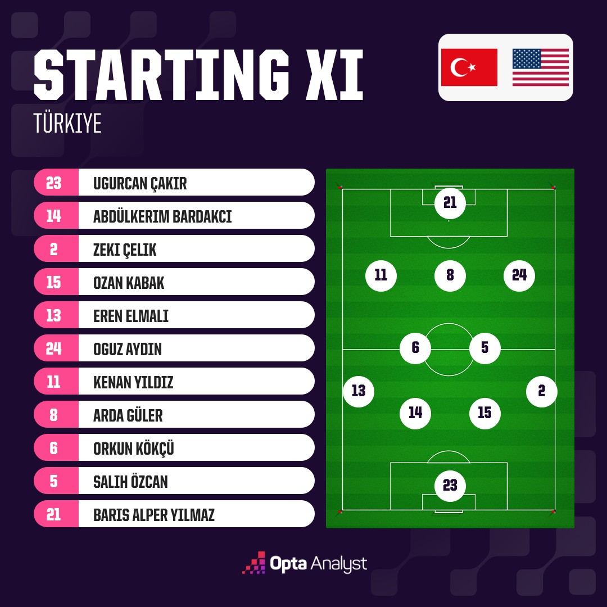
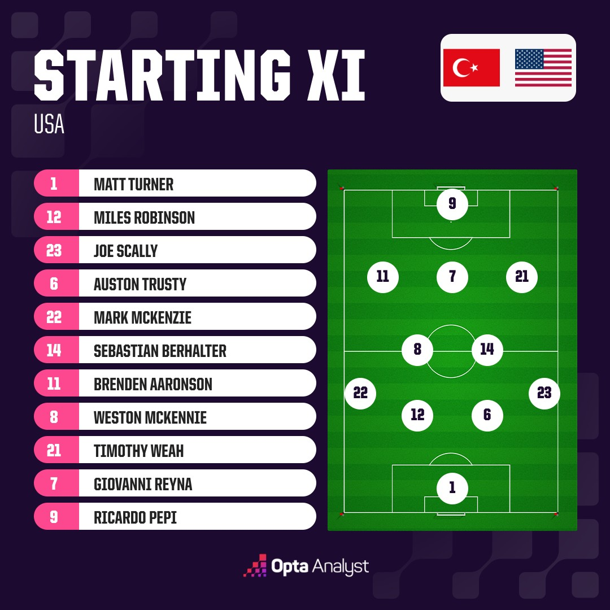
There have been fewer than 3 goals scored in total in each of Türkiye's last 4 games
Türkiye face the United States for a FIFA World Cup group stage match at Los Angeles Stadium on Thursday with the USA side having already secured a place in the Round of 32.
Türkiye were defeated in their last group stage match, losing 1-0 against Paraguay on June 19. In six games this year, they have four wins and two losses.
The United States won their last group stage game on June 19, beating Australia 2-0 at Seattle Stadium. Alex Freeman netted in the win. In 2026, they have won three and lost three.
The United States are top of the group on six points, while Türkiye's zero points place them fourth. The United States have clinched a place in the Round of 32, while Türkiye are facing elimination.
Australia are second in the group on three points, well-positioned to advance to the Round of 32. Paraguay are still in contention for a round of 32 place, sitting third on three points.
The previous fixture between the sides saw Türkiye come out on top 2-1 in a friendly at Pratt & Whitney Stadium at Rentschler Field last June. Arda Güler struck first for the Türkiye side in the 24th minute. Kerem Aktürkoglu also was on the scoresheet. Jack McGlynn scored USA's only goal in the first minute.
Türkiye have yet to score in World Cup play this season. Folarin Balogun has been the leading attacking threat for the United States, scoring twice in this season's World Cup. The striker is tied for fourth among the competition's top scorers.
Türkiye have had difficulty in attack of late, as they have gone 216 minutes in all competitions without scoring. They last found the net against Venezuela in a 6 June friendly.
In their last six matches in all competitions, Türkiye have won four and lost two. The Türkiye side scored eight and conceded four in that period, scoring first in three of the six contests. They had three first-half goals, while their opponents netted three times in the first 45 minutes. The USA side have won three and lost three in their last six. The USA side scored 12 and conceded 12 over that stretch, netting first in four of the six. Most of their goals (nine) came in the first half, while their opponents netted four times before the break.
-
General
Possession 47.4% 47.35752.64352.6% Possession lost in defensive half 42 423434 Possession lost in middle third 58 585858 Duels 112 112113113 Duels success rate 57.1% 57.14340.70840.7% Aerial duels 24 242424 Aerial duels won 50.0% 505050.0% Successful dribbles 9 977 Fouls won 13 131313 Offsides 2 255 Corner awarded 2 299 -
Distribution
Passes 434 434471471 Long passes 66 664242 Long passes proportion (%) 15.2% 15.2078.9178.9% Passing accuracy 77.2% 77.18984.50184.5% Passes in opponents' half 235 235238238 Passing accuracy in opponents' half (%) 67.2% 67.23478.99279.0% Total passes in the final third 120 120115115 Passing accuracy in final third (%) 66.7% 66.66773.04373.0% Forward passes 273 273286286 Forward passes (%) 62.9% 62.90360.72260.7% Through balls 2 222 Final third entries 43 435757 Penalty area entries 19 192727 Total open play crosses 11 111313 Crosses 12 121919 Crossing accuracy 0.0% 026.31626.3% -
Attack
Goals 3 322 Shots 9 91818 Shots on target 3 377 Blocked shots 2 255 Headed shots 0 033 Shots outside the box 1 133 Shots inside the box 8 81515 Shots accuracy excluding blocked shots 42.9% 42.85753.84653.8% Shooting accuracy 33.3% 33.33338.88938.9% Key Passes 7 71414 -
Defence
Tackles 32 321414 Tackles success rate 62.5% 62.564.28664.3% Clearances 24 242727 Interceptions 9 999 Recoveries 42 424242 Attacking third recovery 3 322 Defensive third recovery 22 222121 Midfield third recovery 17 171919 Recoveries in attacking half (%) 7.1% 7.1434.7624.8% -
Discipline
Fouls conceded 13 131313 Yellow cards 0 011 Red cards 0 000